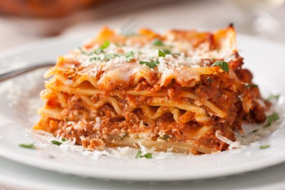

Lasagna

Description
“If there were central casting for casseroles, this one deserved the
leading role. But its beauty was more than cheese deep. This was the
best lasagna I had ever eaten. The sauce was intensely flavored, the
cheeses melted into creaminess as if they were bechamel, the meat was
just chunky enough, and the noodles put up no resistance to the fork.
Most important, the balance of pasta and sauce was positively Italian.
At last I could understand why my neighbor Geoff had told me, as I
dragged home more bags in our elevator, that all-day lasagna is the only
kind worth making.”
Ingredients
For the Sauce
- 1 cup extra virgin olive oil
- 2 medium red onions, finely diced
- 2 large cloves minced garlic
-
8 ounces pancetta, diced salt and freshly ground
black pepper
- ½ cups good red wine, preferably Italian
- 2 28-ounce cans Italian plum tomatoes
- 3 tablespoons tomato paste
- ¾ pound ground sirloin
- ¼ cup freshly grated pecorino Romano
- 2 eggs
-
10 sprigs fresh parsley, leaves only, washed and
dried
- 2 large whole cloves garlic
- ½ cup flour
-
1 pound Italian sausage, a mix of hot and sweet
For the Lasagna
- 1 15-ounce container ricotta cheese
- 2 extra-large eggs
- 2 cups freshly grated pecorino Romano
- ½ cup chopped parsley
- 1 pound mozzarella, grated
-
16 sheets fresh lasagna noodles, preferably Antica
Pasteria
Steps
-
For the sauce, heat 1/2 cup oil in a large heavy Dutch oven or kettle
over low heat. Add the onions, minced garlic and pancetta, and cook,
stirring, for 10 minutes, until the onions are wilted. Season
liberally with salt and pepper. Raise heat slightly, add the wine and
cook until it is mostly reduced, about 20 minutes. Crush the tomatoes
into the pan, and add their juice. Add the tomato paste and 2 cups
lukewarm water. Simmer for 1 hour.
-
Combine the sirloin, cheese and eggs in a large bowl. Chop the parsley
with the whole garlic until fine, then stir into the beef mixture.
Season lavishly with salt and pepper. Using your hands, mix until all
the ingredients are well blended. Shape into meatballs and set aside.
-
Heat the remaining oil in a large skillet over medium-high heat. Dust
the meatballs lightly with flour, shaking off excess, and lay into the
hot oil. Brown the meatballs on all sides (do not cook through) and
transfer to the sauce.
-
In a clean skillet, brown the sausages over medium-high heat. Transfer
to the sauce. Simmer 1 1/2 hours.
-
Heat the oven to 350 degrees. In a large bowl, combine the ricotta,
eggs, pecorino Romano, parsley and all but 1 cup of the mozzarella.
Season well with salt and pepper. Mix thoroughly.
-
Remove the meatballs and sausage from the sauce, and set aside to cool
slightly, then chop coarsely. Spoon a thick layer of sauce into the
bottom of a 9-by-12-inch lasagna pan. Cover with a layer of noodles.
Spoon more sauce on top, then add a third of the meat and a third of
the cheese mixture. Repeat for 2 more layers, using all the meat and
cheese. Top with a layer of noodles, and cover with the remaining
sauce. Sprinkle reserved mozzarella evenly over the top. Bake 30
minutes. Let stand 10 minutes before serving.
Back to Home